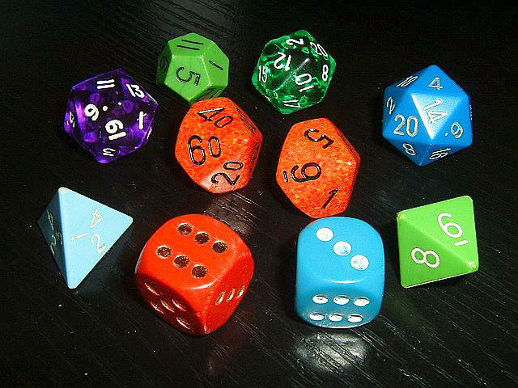

I.3.- Clase Dado
Ejercicio Resuelto

Hemos recibido el encargo de implementar una clase que represente a los dados de un juego de mesa. Los posibles dados para estos juegos son todos aquellos poliedros que tengan todas las caras iguales. Matemáticamente existen cinco tipos diferentes (con cuatro, seis, ocho, doce o veinte caras). Son conocidos como los sólidos platónicos.
Para cada dado queremos registrar la siguiente información:
- el número de caras que tiene;
- la cantidad de lanzamientos que se han realizado con él.
Teniendo en cuenta esas especificaciones, realiza un análisis inicial para decidir qué atributos necesitarías para implementar la clase Dado.
Para poder crear instancias de esta clase se nos ha sugerido implementar dos constructores: uno con un parámetro entero, que indique el número de caras del dado, y otro sin parámetros, que instancie un dado de seis caras.
Implementa ambos constructores.
Respecto a los métodos get se ha decido disponer de métodos para obtener la siguiente información:
- el número de caras, del dado;
- el número de lanzamientos que se han realizado con el dado.
Implementa ambos métodos.
Para que los objetos de la clase Dado resulten de utilidad, han de poder lanzarse para obtener un resultado al azar. Se ha planteado un método llamado lanzar que devuelva un valor aleatorio equiprobable dentro de las caras que tenga el dado. Se nos ha pedido además el valor devuelto sea de tipo String y consista en una cadena que represente el número de la cara en castellano. Es decir, que este método devolverá cadenas del tipo "UNO", "DOS", "TRES", "CUATRO", etc.
Implementa en Java el método lanzar tal y como se ha especificado.
En cuanto a una posible representación textual de los objetos de la clase Dado, se nos ha propuesto el siguiente formato de salida:
Número de caras: xxx. Número de lanzamientos: zzzdonde xxx será el número de caras del dado y zzz el número de veces que ha sido lanzado hasta el momento. Algunos ejemplos de salida podrían ser:
Número de caras: 6. Número de lanzamientos: 0
Número de caras: 12. Número de lanzamientos: 3
Número de caras: 4. Número de lanzamientos: 21Teniendo en cuenta esas especificaciones, implementa un método toString en Java para la clase Dado.
Ejercicio Resuelto
¿Cómo afectaría esta nueva funcionalidad a la nueva clase Dado desde el punto de vista de los atributos?
Teniendo en cuenta que ahora debemos registrar cada lanzamiento, ¿cómo implementarías el método lanzar?
Dado que ya no disponemos de los atributos numeroCaras y numeroLanzamientos, ¿cómo implementarías ahora los métodos getNumeroCaras y get?NumeroLanzamientos
Añade los cambios oportunos al constructor para la nueva clase Dado.
Dado que ahora que cada dado contiene un registro del número de veces que ha salido cada cara, estaría bien incorporar un nuevo método getNumeroVecesCara que:
- reciba como parámetro un número entero que indique una cara del dado (entre 1 y el número de caras);
- devuelva el número de veces que ha salido esa cara.
Si el parámetro es un valor inválido (menor que 1 o superior al número de caras) debería lanzarse una excepción de tipo IllegalArgumentException.
Implementa el método getNumeroVecesCara.